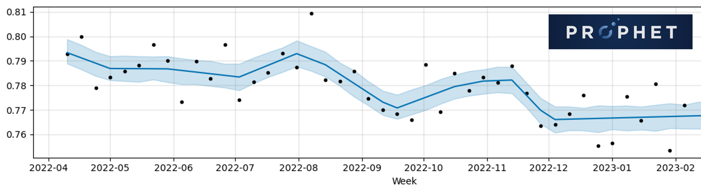

Stock prediction
The project carried out to respond to the challenge posed by Cajamar aims to predict the number of units sold of an ecommerce in the case of different products for a time span of 3 months. To achieve this objective, a history of one year and 4 months (from 01/06/2015 to 30/09/2016) with different variables has been used.

The main algorithms used in this project have been:
- Recurrent Neuronal Networks: Recurrent Neural Networks (RNNs) are a type of artificial neural network that is designed to handle sequential data, such as time series or natural language text. Unlike feedforward neural networks, which only process input data in one direction, from input to output, RNNs are able to maintain a "memory" of past inputs, which enables them to process sequences of arbitrary length. In an RNN, each neuron has a "hidden state" that captures information about the previous inputs that have been processed. This hidden state is updated at each time step, using a combination of the current input and the previous hidden state. The updated hidden state is then passed on to the next time step, where it is used to process the next input.
- Prophet: Prophet is a time series forecasting tool developed by Facebook's Core Data Science team. It is designed to make it easier for analysts and developers to produce high-quality forecasts for time series data, such as stock prices, website traffic, or product sales. Prophet works by decomposing the time series data into its individual components, such as trend, seasonality, and holidays. It then uses a Bayesian model to estimate future values of the time series, taking into account both the historical data and any future events that may affect the time series.